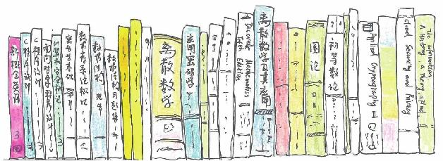
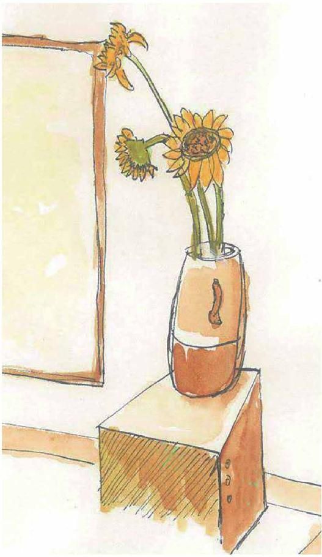
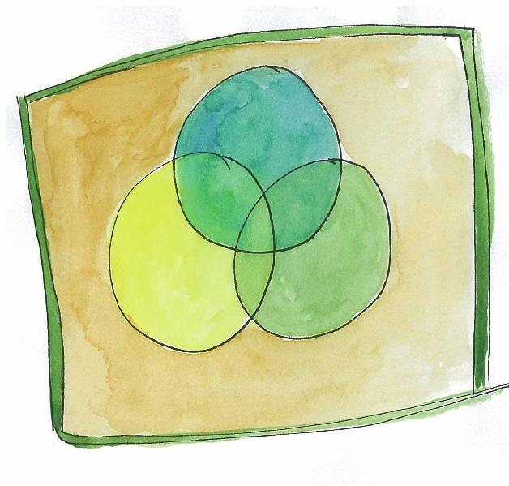
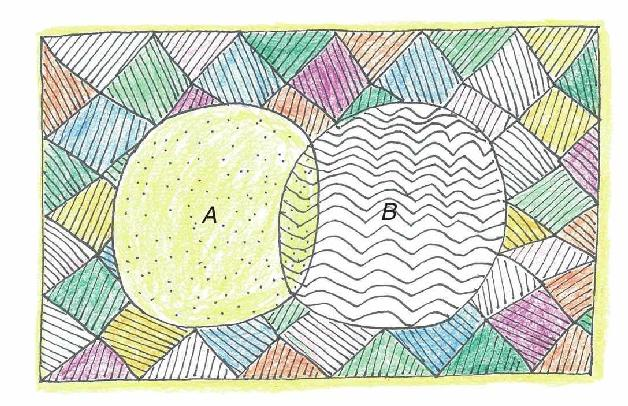

一群小孩，一打袜子，一堆书……把具有相同性质的离散个体聚集起来就构成了一个一个的集合。
在波尔·阿·赫尔莫斯（Paul R.Halmos）的经典读本《自然集合理论》中他写道：“一群狼、一串葡萄或一堆鸽子都是集合的例子，集合的数学概念能当作所有已知数学的基础。”

集合的例子：书架上的一排书
集合的例子：桌上的几张CD碟

集合的例子：花瓶里的几枝花
集合的一种表示方法是把其中的元素一一列举出来，比如：
小于6的正整数集合={1，2，3，4，5}。
可以看到，当集合中元素较多时，特别是对无穷集合而言，这种方法就不适合了，比如说怎样列举小于20000的自然数集合呢？
这时，用公式来表示就会方便很多，小于20000的自然数集合可以这样表示：
{a∣a∈N且a＜20000}，其中N表示自然数集合。
我们时常用一些大写字母来表示一些特殊的集合，比如用Q表示有理数的集合，用Z表示整数的集合，用R表示实数的集合，用Z+表示正整数的集合，用2Z表示偶数集。
维恩（John Venn）是19世纪一位哲学家和数学家，他采用了一种图形的方法来表示集合，具体说来就是在矩形中用不同的圆表示不同的集合。其实早在维恩之前，德国哲学家和数学家莱布尼茨已经系统地运用过这种用图来表示集合的方法，但今天这种图还是称为维恩图（Venn Diagram）。

维恩图
通过一些集合的组合可以构成新的集合。
如果A和B是两个集合，那么把A、B两个集合中的所有元素合并可得到两个集合的并集，记为A∪B。
属于A同时又属于B的元素组成的集合，称为这两个集合的交集，记为A∩B。
对于一个具体的问题而言，所研究的各个集合的元素的总和也构成一个集合，称为全集。全集中所有不属于A的元素构成A的补集，记为～A。
比方说，高三（14）班全体同学可以作为一个全集，如果A是这个全集中的男生集合，那么～A代表的就是女生集合。
有一个应用很广泛的∪和∩互换的运算法则：～（A∪B）=（～A）∩（～B），即德·摩根律，这一法则归功于英国数学家奥古斯特·德·摩根（Augustus de Morgan，1806—1871）。

该法则可以用上面的图得到直观的证实，A、B并集以外的面积，等于A之外并且也是B之外的面积。
德·摩根律的另一表示是～（A∩B）=（～A）∪（～B）。